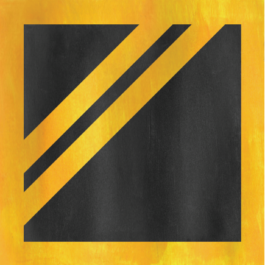

Paint the Pavement
Discipline
Book Design
Team Members
Overview
Paint the Pavement is an organization that goes around different cities in the US (and in this case, Pittsburgh) to promote street safety and community building through public art murals.
After receiving a packet of content on how to apply to work with the organization, I was tasked with creating an identity system, including finding the type, color, and creating a logo to communicate the given information and promote the organization's goals.
Since Paint the Pavement is all about promoting Pittsburgh safety through art and community building, I wanted to create an identity for it that was both classy and inclusive. I was inspired by art gallery layouts and the frames around paintings, so the concept I wanted to communicate was how the reader could help create "A New Frame for Pittsburgh."


Designing the Logo
Since my concept is based on the layout and visuals of an art gallery, I wanted to create a logo that could represent my concept, as well as the purpose of Paint the Pavement. After iterating through different representations of Pittsburgh and painting, I settled on a visual of a framed road that utilizes paint textures to represent the identity system. Throughout the book, there are similar frames with paint textures to call back to the logo.

Layout Iterations
My earlier drafts worked with a lot more color and vibrancy within the pages, and utilized consistent elements to bring the pages with related content together. While it may have looked more visually enticing at first glance, the booklet did not really convey the idea of what Paint the Pavement is about — community building. From here, I worked on trying to incorporate a more personal touch to the book by utilizing photos, as well as texture to the frame in each page.
Finding the Right Fonts
My hope was to create a contrast between modern and old, as well as high-end and accessible between the different typefaces I used. Through studying how various typefaces complemented each other and how well they communicated my concept, I ultimately chose to work with Didot for large headers and titles, and Proxima Nova for subheaders and body content.
Post-Project Thoughts
For me, this project was a huge step forward in honing skills in utilizing typographic voice and color, as well as their use in visual hierarchy. If I were to go back and change things, I would make sure that my concept is communicated more clearly and there was a better way to find a certain page, perhaps through page numbering or a color navigation system within the table of contents. I'd also like to explore different ways of reincorporating the wordmark (on the first page) throughout the book.